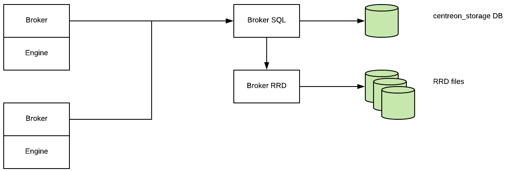

How to write a Stream Connector¶
Overview¶
Centreon Stream Connector is a feature introduced in Centreon 3.4.6. It allows one to export Centreon data (events and metrics) to an external storage or application such as ElasticSearch, Splunk, InfluxDB, files, etc.
In a Centreon platform, the component that carries information between the remote pollers and the Centreon central server is called Centreon Broker. This broker stores received data into the Centreon local storage: MariaDB and RRDtool.
The following diagram explains the transfer of collected data and insertion into storages:
{kind=link}
The Stream Connector functionality is a new Centreon Broker output getting data from Centreon Broker Master (also known as Centreon Broker SQL) to aggregate and forward it to external storage:

This output loads a Lua script called a Stream Connector, which job is to handle, aggregate and enrich the data before forwarding it to the defined protocol:

Because it is an output of Centreon Broker, the principle of creating retention files upon interrupting external storage access is retained. In the same way, it is possible to filter input on the categories of flow to handle.
Requirements¶
To use the Centreon Stream connector functionality you need to update your Centreon platform to Centreon 3.4.6:
- Centreon Web >= 2.8.18
- Centreon Broker >= 3.0.13
- Lua >= 5.1.x
Creating a new Lua script¶
The complete technical documentation is available here. In this how-to, we will write two scripts:
- The first one, easy, that explains the basics of Stream Connectors. Its goal is to export data to a log file.
- The second one is more exigent for the reader, it exports performance data to the TSDB InfluxDB but is easily adaptable to export to another TSDB.
Programming language¶
Centreon chose the Lua programming language to let you handle, aggregate and transfer data. Lua is a programming language that is easy to use. You can find more information with the Lua official documentation
Storage of Lua scripts¶
Broker’s Lua scripts can be stored in any directory readable by the centreon-broker user.
We recommend to store them in /usr/share/centreon-broker/lua.
Note
In a near future, this directory will be in the default path of the Lua scripts launched by broker. It will then be easier to use user defined Lua libraries because you will just have to add your libraries there like stream connectors.
Write all information into a file¶
Store raw data¶
Let’s start with the first script. Our goal is to store all events given by Broker in a log file. We will call our stream connector bbdo2file.lua.
As we said previously, we will store this file into the /usr/share/centreon-broker/lua directory on the Centreon central server.
If the directory does not exist, as root, we can create it with the following command:
mkdir -p /usr/share/centreon-broker/lua
Centreon Broker provides several log functions to write logs, warnings or errors into a file. We will use one of these functions info() to write Broker events. See technical documentation for more information.
The function info() makes part of the broker_log object. To call it, the syntax is the following:
broker_log:info(level, text)
- level is an integer from 1 (most important) to 3 (least important).
- text is the text to write as log.
Note
Did you notice the separator between broker_log and info, yes it is a colon! Objects functions, also called methods are called like this in Lua.
Let’s start our script. The more important function in a stream connector is the write() function. Each time an event is received from a poller through Broker, this function is called with the event as an argument.
Note
You will never have to call the write() function by yourself, it is always Broker’s work to do so. And it would be a fault to make such a call. In other words, there should not be any call to the write() function in your script.
See technical documentation for more information.
Here is the bbdo2file.lua first version:
function init(conf)
broker_log:set_parameters(3, "/var/log/centreon-broker/bbdo2file.log")
end
function write(d)
for k,v in pairs(d) do
broker_log:info(3, k .. " => " .. tostring(v))
end
return true
end
Note
Information about the initialization of the Broker’s log function and its parameters are given here see technical documentation.
Let’s explain what we are doing in this script.
We must provide an init() function, it is described in the technical documentation.
This function is called during the stream connector initialization. Here, we use it to initialize the broker_log object. To achieve this, we call the broker_log::set_parameters() method that needs two parameters :
- A max level (from 1 to 3). If you give 2 here, only logs of levels 1 and 2 will be returned.
- A file to write the logs in. This file must be in a writable directory for the centreon-broker user.
The second function is the write() function. We already said its argument is a Broker event. This type of object is a collection of keys/values. For example:
{
"check_hosts_freshness": false,
"active_host_checks": true,
"category": 1,
"event_handlers": true,
"instance_id": 1,
"last_command_check": 1522836592,
"type": 65552,
"global_service_event_handler": "",
"obsess_over_services": false,
"passive_service_checks": true,
"last_alive": 1522836593,
"active_service_checks": true,
"check_services_freshness": true,
"flap_detection": false,
"global_host_event_handler": "",
"notifications": true,
"obsess_over_hosts": false,
"passive_host_checks": true,
"element": 16
}
In all events, you will find category, element and type.
- Information about the category can be found here in the bbdo documentation
- The element is the sub-category (also called type in the bbdo documentation).
- The type is a number built from the category and the element (binary concatenation).
In this example, the category is 1 and the element is 16. So, by reading the documentation, we can say this event is a NEB event with sub-category instance-status.
To finish with the write() function, we make a loop on the d event parameters. For each step, k is a key and v is the corresponding value. And we send to the log file a string k .. ” => ” .. tostring(v) that means the concatenation of k, => and v converted into a string. You will see an example of the result below.
Another possibility would be to use the broker.json_encode(d) function that converts any Lua object to a json string representation of it. So, we could write the function like this:
function write(d)
broker_log:info(3, broker.json_encode(d))
return true
end
Note
You can notice that broker.json_encode(d) is made of broker and json_encode(d) separated by a dot and not a colon. This is because broker is not a Lua object. In fact, you can see it as a functions set provided by Centreon Broker.
Once your file /usr/share/centreon-broker/lua/bbdo2file.lua is ready, verify it is readable by the centreon-broker user (or the centreon-engine user who is the owner of the centreon-broker group), if it is not the case, as root you can enter:
# chown centreon-engine:centreon-engine /usr/share/centreon-broker/lua/bbdo2file.lua
Then configure the new output into Centreon Web interface in Configuration > Pollers > Broker configuration > Central Broker. In Output tab select Generic – Stream connector and click Add:

Define the name of this output and the path to the Lua connector:

Then click Save and go to generate the configuration and restart cbd.
Once the Centreon Broker will be restarted on your Centreon central server, data will appear in your /var/log/centreon-broker/bbdo2file.log log file:
mer. 28 mars 2018 14:27:35 CEST: INFO: flap_detection => true
mer. 28 mars 2018 14:27:35 CEST: INFO: enabled => true
mer. 28 mars 2018 14:27:35 CEST: INFO: host_id => 102
mer. 28 mars 2018 14:27:35 CEST: INFO: last_time_ok => 1522240053
mer. 28 mars 2018 14:27:35 CEST: INFO: state => 0
mer. 28 mars 2018 14:27:35 CEST: INFO: last_update => 1522240054
mer. 28 mars 2018 14:27:35 CEST: INFO: last_check => 1522240053
mer. 28 mars 2018 14:27:35 CEST: INFO: execution_time => 0.005025
mer. 28 mars 2018 14:27:35 CEST: INFO: acknowledged => false
mer. 28 mars 2018 14:27:35 CEST: INFO: service_id => 778
mer. 28 mars 2018 14:27:35 CEST: INFO: active_checks => true
mer. 28 mars 2018 14:27:35 CEST: INFO: notify => false
mer. 28 mars 2018 14:27:35 CEST: INFO: max_check_attempts => 3
mer. 28 mars 2018 14:27:35 CEST: INFO: obsess_over_service => true
mer. 28 mars 2018 14:27:35 CEST: INFO: check_type => 0
mer. 28 mars 2018 14:27:35 CEST: INFO: last_hard_state_change => 1522165654
mer. 28 mars 2018 14:27:35 CEST: INFO: category => 1
mer. 28 mars 2018 14:27:35 CEST: INFO: perfdata => used=41986296644o;48103633715;54116587930;0;60129542144 size=60129542144o
mer. 28 mars 2018 14:27:35 CEST: INFO: check_interval => 5
mer. 28 mars 2018 14:27:35 CEST: INFO: output => Disk /var - used : 39.10 Go - size : 56.00 Go - percent : 69 %
mer. 28 mars 2018 14:27:35 CEST: INFO: check_command => check-bench-disk
mer. 28 mars 2018 14:27:35 CEST: INFO: check_period => 24x7
mer. 28 mars 2018 14:27:35 CEST: INFO: type => 65560
mer. 28 mars 2018 14:27:35 CEST: INFO: last_hard_state => 0
Note
This log file will grow quickly, do not forget to add a log rotate.
Use parameters¶
The Centreon Broker log functions should be used for log only. To write into a file, we must use the Lua dedicated function. Moreover, it is possible to use parameters to define the name of the log file.
So it is time to improve our Stream Connector:
function init(conf)
logFile = conf['logFile']
broker_log:set_parameters(3, "/var/log/centreon-broker/debug.log")
end
function writeIntoFile(output)
local file,err = io.open(logFile, 'a')
if file == nil then
broker_log:info(3, "Couldn't open file: " .. err)
else
file:write(output)
file:close()
end
end
function write(d)
for k,v in pairs(d) do
writeIntoFile(k .. " => " .. tostring(v) .. "\n")
end
return true
end
Did you notice that expression local file,err = io.open(logFile, ‘a’)?
Lua is able to store several variables at the same time. Also, Lua functions can return several variables!
For example, if you want to swap variables a and b, you can enter:
a, b = b, a
Another example that illustrates several values returned:
function fib(a, b)
return b, a + b
end
So, this call to io.open returns two variables, a first variable file that is a file descriptor used to access the file and a second variable not always defined that contains error if one occurs or nil (not defined) otherwise.
The init() function allows to get parameters and define these from Centreon web interface. See technical documentation for more information. Here, we add the possibility to choose the destination file name. The conf table has a key logFile defined in the web interface. The corresponding value is the file name used to store events.
Edit your Broker output to declare this parameter:

It is important that the name of the parameter in the web interface matches the key name in the conf table. Here, it is logFile.
Then click Save and go to generate the configuration and restart cbd.
Data are stored into /var/log/centreon-broker/bbdo2file.log log file as this:
name => error
category => 3
interval => 300
rrd_len => 3456000
value => 0
value_type => 0
type => 196612
ctime => 1522315660
index_id => 4880
element => 4
state => 0
category => 3
interval => 300
rrd_len => 3456000
is_for_rebuild => false
service_id => 1056
type => 196609
ctime => 1522315660
host_id => 145
element => 1
is_for_rebuild => false
metric_id => 11920
Manipulate data¶
Here, we continue to improve our stream connector by choosing what events to export and also by improving outputs.
We will select only the NEB category and the events regarding hosts and services status.
We know that NEB is the category 1, also service status is the sub-category 24, whereas host status is the sub-category 14.
So, only events with the following criteria:
- category = 1
- element = 14 or element = 24
are interesting for us.
Moreover, we would prefer to have a host name instead of a host id and a service description instead of a service id.
At last, we would be interested to get status information and outputs.
NEB Events with elements 14 and 24 give almost all we want except host names and service descriptions.
To get those two information, we will have to use the broker_cache object. This one is filled when pollers are restarted or reloaded. So, do not forget to restart your pollers if you want something in your broker_cache object!
If the cache is well filled, it is easy to get a host name from the host id:
broker_cache:get_hostname(host_id)
And it is also easy to get the service description from the host id and service id:
broker_cache:get_service_description(host_id, service_id)
To install the filter on events, there is a useful function called filter() that takes two parameters into account: category, element.
This function, if defined, is called just before write(). If it returns true, the write() function will be called, otherwise, the event will be thrown away.
Let’s complete our Lua script:
function init(conf)
logFile = conf['logFile']
broker_log:set_parameters(3, "/var/log/centreon-broker/debug.log")
end
local function writeIntoFile(output)
local file,err = io.open(logFile, 'a')
if file == nil then
broker_log:info(3, "Couldn't open file: " .. err)
else
file:write(output)
file:close()
end
end
function write(d)
local output = ""
local host_name = broker_cache:get_hostname(d.host_id)
if not host_name then
broker_log:info(3, "Unable to get name of host, please restart centengine")
host_name = d.host_id
end
if d.element == 14 then
output = "HOST:" .. host_name .. ";" .. d.host_id .. ";" .. d.state .. ";" .. d.output
writeIntoFile(output)
broker_log:info(output)
elseif d.element == 24 then
local service_description = broker_cache:get_service_description(d.host_id, d.service_id)
if not service_description then
broker_log:info(3, "Unable to get description of service, please restart centengine")
service_description = d.service_id
end
output = "SERVICE:" .. host_name .. ";" .. d.host_id .. ";" .. service_description .. ";" .. d.service_id .. ";" .. d.state .. ";" .. d.output
writeIntoFile(output)
broker_log:info(output)
end
return true
end
function filter(category, element)
-- Get only host status and services status from NEB category
if category == 1 and (element == 14 or element == 24) then
return true
end
return false
end
Just several remarks on this new script before showing what we get.
In the init() function, we access the logFile key in the conf table by using conf[‘logFile’]. Whereas, in the write() function, we access the element key in the d table by using d.element…
In fact, the two syntaxes are allowed : d.element is the same value than d[‘element’].
Another remark, in the write() function we can see something like:
if not host_name then
And in the writeIntoFile() function, we can see that:
if file == nil then
Do they mean the same thing? Where is the difference?
You must know that in Lua, a variable is considered to be true if it is defined and not false:
so, the following code
if toto then
print("Good")
else
print("Bad")
end
will write Good if toto is defined and not false. More precisely, it will write Good in the following cases:
- toto=12
- toto=true
- toto=”A string”
- toto=0 (surprising!)
It will write Bad in these cases:
- toto=nil (by default a variable is nil, which means not defined)
- toto=false
The /var/log/centreon-broker/bbdo2file.log file will now contain:
HOST:srv-DC-djakarta;215;0;OK - srv-DC-djakarta: rta 0.061ms, lost 0%
SERVICE:mail-titan-gateway;92;disk-/usr;623;0;Disk /usr - used : 42.98 Go - size : 142.00 Go - percent : 30 %
SERVICE:mail-sun-master;87;memory-stats;535;0;Memory usage (Total 13.0GB): 0.12GB [buffer:0.00GB] [cache:0.01GB] [pages_tables:0.00GB] [mapped:0.00GB] [active:0.07GB] [inactive:0.00GB] [apps:0.02GB] [unused:12.88GB]
SERVICE:mail-saturn-frontend;86;traffic-eth1;512;0;Traffic In : 4.73 Mb/s (4.73 %), Out : 4.79 Mb/s (4.79 %) - Total RX Bits In : 396.01 Gb, Out : 393.88 Gb
SERVICE:mail-saturn-frontend;86;memory-stats;515;0;Memory usage (Total 16.0GB): 8.89GB [buffer:0.43GB] [cache:0.95GB] [pages_tables:0.27GB] [mapped:0.15GB] [active:3.92GB] [inactive:0.29GB] [apps:2.88GB] [unused:7.11GB]
SERVICE:mail-neptune-frontend;80;traffic-eth1;392;0;Traffic In : 4.82 Mb/s (4.82 %), Out : 6.48 Mb/s (6.48 %) - Total RX Bits In : 398.40 Gb, Out : 396.44 Gb
HOST:srv-DC-casablanca;207;0;OK - srv-DC-casablanca: rta 2.042ms, lost 0%
SERVICE:mail-neptune-frontend;80;memory-stats;395;0;Memory usage (Total 9.0GB): 0.54GB [buffer:0.03GB] [cache:0.00GB] [pages_tables:0.01GB] [mapped:0.00GB] [active:0.48GB] [inactive:0.00GB] [apps:0.01GB] [unused:8.46GB]
SERVICE:mail-mercury-frontend;82;traffic-eth1;432;0;Traffic In : 8.28 Mb/s (8.28 %), Out : 1.23 Mb/s (1.23 %) - Total RX Bits In : 397.71 Gb, Out : 400.34 Gb
SERVICE:mail-mercury-frontend;82;memory-stats;435;0;Memory usage (Total 12.0GB): 1.58GB [buffer:0.00GB] [cache:0.63GB] [pages_tables:0.00GB] [mapped:0.00GB] [active:0.75GB] [inactive:0.00GB] [apps:0.19GB] [unused:10.42GB]
SERVICE:mail-mars-frontend;84;traffic-eth1;472;0;Traffic In : 7.24 Mb/s (7.24 %), Out : 3.36 Mb/s (3.36 %) - Total RX Bits In : 399.93 Gb, Out : 395.67 Gb
SERVICE:mail-mars-frontend;84;memory-stats;475;0;Memory usage (Total 3.0GB): 1.19GB [buffer:0.01GB] [cache:0.59GB] [pages_tables:0.00GB] [mapped:0.00GB] [active:0.15GB] [inactive:0.04GB] [apps:0.39GB] [unused:1.81GB]
SERVICE:mail-jupiter-frontend;85;traffic-eth1;492;0;Traffic In : 1.41 Mb/s (1.41 %), Out : 9.08 Mb/s (9.08 %) - Total RX Bits In : 388.86 Gb, Out : 394.85 Gb
SERVICE:mail-jupiter-frontend;85;memory-stats;495;0;Memory usage (Total 12.0GB): 0.57GB [buffer:0.04GB] [cache:0.23GB] [pages_tables:0.02GB] [mapped:0.02GB] [active:0.07GB] [inactive:0.03GB] [apps:0.16GB] [unused:11.43GB]
SERVICE:mail-io-backend;88;traffic-eth1;547;0;Traffic In : 1.51 Mb/s (1.51 %), Out : 7.12 Mb/s (7.12 %) - Total RX Bits In : 389.61 Gb, Out : 390.54 Gb
SERVICE:mail-io-backend;88;diskio-system;551;0;Device /dev/sda: avg read 4.78 (MB/s) and write 9.08 (MB/s)
Export performance data to InfluxDB¶
Now, you have already seen many things about stream connectors. It is time to create something more useful!
InfluxDB is a Time Series database. We will use this storage to insert performance data collected by the Centreon platform. For this example, we will use the predefined InfluxDB Docker.
To send data to InfluxDB, we need parameters to access to InfluxDB storage:
- http_server_address: IP address of the storage
- http_server_port: 8086 by default
- http_server_protocol: http or https
- influx_database: name of database
- influx_user: user to access to database if defined
- influx_password: password of user to access to database if defined
In order to not saturate the storage, we will add all events in a queue and once its max size is reached, we will send data by bulk.
We need to define the size of the queue and the maximum delay before sending events:
- max_buffer_size
- max_buffer_age
To create this queue, we introduce a code a little more complicated. We construct an object event_queue. It is composed of parameters such as events, influx_database and methods like new(), add().
To understand how to create such an object in Lua, we recommend the Lua documentation here for classes and there for metatables.
To send data to a server, we provide a broker_tcp_socket object.
Its API is very simple (too simple?). This socket is a TCP socket, it does not support encryption and it can be tricky to send data in http. Here is an example:
-- Here, we create our socket
local socket = broker_tcp_socket.new()
-- We establish the connection with the server
socket:connect(address, port)
-- Now, we can send data
socket:write("This is a text to send")
-- If, we want an answer, we also have a function to read
local content = socket:read()
-- When exchanges are finished, we can close the socket
socket:close()
For our purpose, we do not use broker_tcp_socket because of its limitations. We want to be able to send data to an https server.
A prerequisite is to install the lua-socket library. This library provides several functionalities, we need two of them:
- http socket
- ltn12
To access them, Lua provides the require function.
Let’s introduce the beginning of our new Stream Connector.
The queue parameters¶
-- We declare the objects to import here
local http = require("socket.http")
local ltn12 = require("ltn12")
-- Here are predefined queue parameters
local event_queue = {
__internal_ts_last_flush = nil,
http_server_address = "",
http_server_port = 8086,
http_server_protocol = "http",
events = {},
influx_database = "mydb",
influx_user = "",
influx_password = "",
max_buffer_size = 5000,
max_buffer_age = 5
}
In this table, we give default values to parameters that can possibly be changed during the init() call. This table will be used to store important data for the script and is also our queue object.
A method to create the queue¶
To declare this table as a Lua object, we need a constructor. So, here it is:
-- Constructor of the event_queue
function event_queue:new(o, conf)
o = o or {}
setmetatable(o, self)
self.__index = self
for i,v in pairs(conf) do
if self[i] and i ~= "events" and string.sub(i, 1, 11) ~= "__internal_" then
broker_log:info(1, "event_queue:new: getting parameter " .. i .. " => " .. v)
self[i] = v
else
broker_log:warning(1, "event_queue:new: ignoring parameter " .. i .. " => " .. v)
end
end
self.__internal_ts_last_flush = os.time()
broker_log:info(2, "event_queue:new: setting the internal timestamp to " .. self.__internal_ts_last_flush)
return o
end
Note
In this function, we use a Lua sugar “o = o or {}” that means o stays the same if it is true, otherwise it is affected with an empty table {}.
Another point to notice is the ~= operator that means different from.
And to finish on this function, the variable self is implicitly defined when we declare an object’s method. Its meaning is the same as this in Java or in C++. It represents the object we are working on.
A method to add event in queue¶
We have a queue object. It would be great to use it like this:
-- We construct it
local queue = event_queue:new(nil, conf)
-- We add an event to it
queue:add(event)
-- When the queue is full, we would like to do something like this
queue:flush()
Let’s do it! Below, we present an add() method that retrieves a host name and service description from the cache, builds a string from the event and pushes it on its stack.
function event_queue:add(e)
local metric = e.name
-- time is a reserved word in influxDB so I rename it
if metric == "time" then
metric = "_" .. metric
end
-- retrieve objects names instead of IDs
local host_name = broker_cache:get_hostname(e.host_id)
local service_description = broker_cache:get_service_description(e.host_id, e.service_id)
-- what if we could not get them from cache
if not host_name then
broker_log:warning(1, "event_queue:add: host_name for id " .. e.host_id .. " not found. Restarting centengine should fix this.")
host_name = e.host_id
end
if not service_description then
broker_log:warning(1, "event_queue:add: service_description for id " .. e.host_id .. "." .. e.service_id .. " not found. Restarting centengine should fix this.")
service_description = e.service_id
else
service_description = service_description:gsub(" ", "_")
end
-- we finally append the event to the events table
metric = metric:gsub(" ", "_")
broker_log:info(3, 'event_queue:add: adding ' .. service_description .. ",host=" .. host_name .. " " .. metric .. "=" .. e.value .. " " .. e.ctime .. '000000000" to event list.')
self.events[#self.events + 1] = service_description .. ",host=" .. host_name .. " " .. metric .. "=" .. e.value .. " " .. e.ctime .. "000000000\n"
-- then we check whether it is time to send the events to the receiver and flush
if #self.events >= self.max_buffer_size then
broker_log:info(2, "event_queue:add: flushing because buffer size reached " .. self.max_buffer_size .. " elements.")
self:flush()
return true
elseif os.time() - self.__internal_ts_last_flush >= self.max_buffer_age then
broker_log:info(2, "event_queue:add: flushing " .. #self.events .. " elements because buffer age reached " .. (os.time() - self.__internal_ts_last_flush) .. "s and max age is " .. self.max_buffer_age .. "s.")
self:flush()
return true
else
return false
end
end
A method to flush the queue¶
Once the events added in the queue and the maximum size of the queue or the timeout is reached, events will be sent to the InfluxDB storage.
This function builds data from the queue and sends them to the storage. If an error occurs, it dumps a log error.
It is here that we use the http and ltn12 objects loaded at the beginning of the script.
function event_queue:flush()
broker_log:info(2, "event_queue:flush: Concatenating all the events as one string")
-- we concatenate all the events
local http_post_data = ""
local http_result_body = {}
for i, raw_event in ipairs(self.events) do
http_post_data = http_post_data .. raw_event
end
broker_log:info(2, 'event_queue:flush: HTTP POST request "' .. self.http_server_protocol .. "://" .. self.http_server_address .. ":" .. self.http_server_port .. "/write?db=" .. self.influx_database .. '"')
broker_log:info(3, "event_queue:flush: HTTP POST data are: '" .. http_post_data .. "'")
-- build url
local influxdb_url = self.http_server_protocol .. "://" .. self.http_server_address .. ":" .. self.http_server_port .. "/write?db=" .. self.influx_database
-- add authentication if needed
if string.len(self.influx_user) >= 1 and string.len(self.influx_password) >= 1 then
influxdb_url = influxdb_url .. "&u=" .. self.influx_user .. "&p="..self.influx_password
end
local hr_result, hr_code, hr_header, hr_s = http.request{
url = influxdb_url,
method = "POST",
-- sink is where the request result's body will go
sink = ltn12.sink.table(http_result_body),
-- request body needs to be formatted as a LTN12 source
source = ltn12.source.string(http_post_data),
headers = {
-- mandatory for POST request with body
["content-length"] = string.len(http_post_data)
}
}
-- Handling the return code
if hr_code == 204 then
broker_log:info(2, "event_queue:flush: HTTP POST request successful: return code is " .. hr_code)
else
broker_log:error(1, "event_queue:flush: HTTP POST request FAILED: return code is " .. hr_code)
for i, v in ipairs(http_result_body) do
broker_log:error(1, "event_queue:flush: HTTP POST request FAILED: message line " .. i .. ' is "' .. v .. '"')
end
end
-- now that the data has been sent, we empty the events array
self.events = {}
-- and update the timestamp
self.__internal_ts_last_flush = os.time()
end
The init() function to get parameters and create the queue¶
In this case, the init() function creates the queue with parameters defined by users in the web interface or uses default parameters already defined in the queue. This alternative is managed by the queue constructor.
function init(conf)
broker_log:set_parameters(1, "/var/log/centreon-broker/stream-connector-influxdb.log")
broker_log:info(2, "init: Beginning init() function")
queue = event_queue:new(nil, conf)
broker_log:info(2, "init: Ending init() function, Event queue created")
end
Note
queue is not defined as local, this is important so that it is accessible from all the functions.
The write() function to insert events in queue¶
The write() function is only used to insert filtered events into the queue:
function write(e)
broker_log:info(3, "write: Beginning write() function")
queue:add(e)
broker_log:info(3, "write: Ending write() function\n")
return true
end
The filter() function to select only performance data events¶
To select only performance data, we need to select category 3 (“Storage”) and element 1 for metric:
function filter(category, element)
if category == 3 and element == 1 then
return true
end
return false
end
Configure Centreon Broker¶
Configure the new output into Centreon Web interface in Configuration > Pollers > Broker configuration > Central Broker. In Output tab select Generic – Stream connector and click Add:
Define the name of this output and the path to the Lua connector:
{kind=link}
Then click Save and go to generate the configuration and restart cbd.
Note
Don’t forget to restart “centengine” too to create the Centreon Broker cache.
If you install the Grafana dashboard, you can visualize the stored data:

Discover other Centreon Stream Connectors¶
Centreon provides a Github repository to host Lua scripts developed by Centreon and the community. Please go to the dedicated Github.
Need help to develop your Stream connector? You want to share your experience with the community? Join the Centreon community Slack channel.